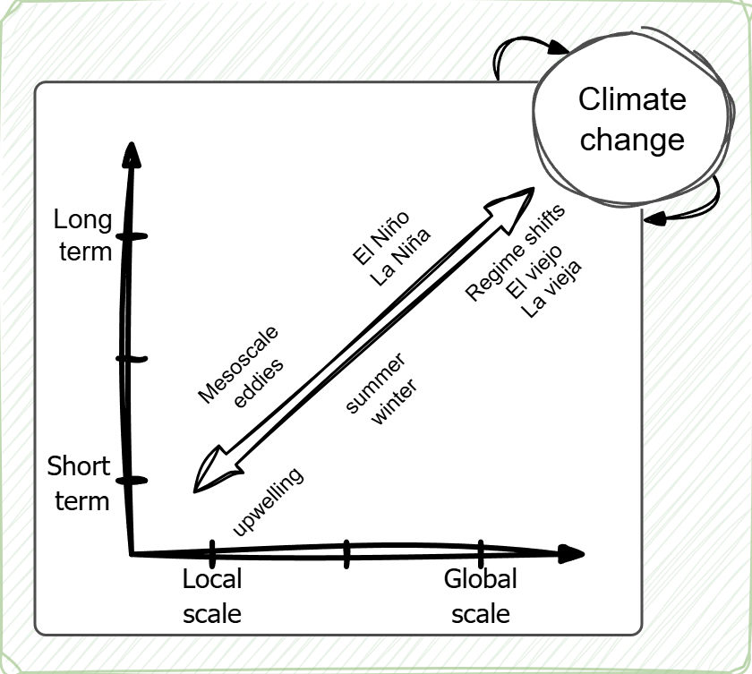
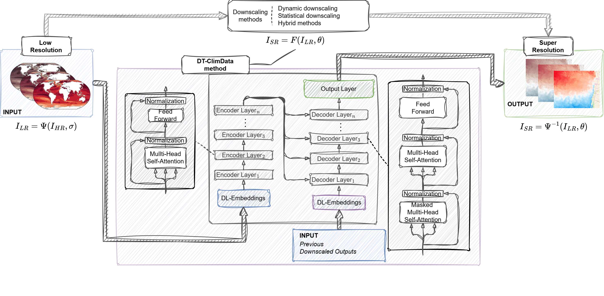
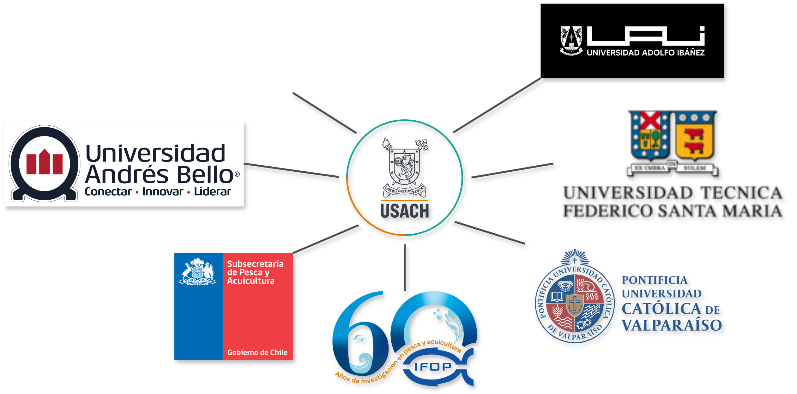

Towards quantifying environment–resource interactions using Statistical and Deep Learning tools in a Changing Climate
X Workshop de Ciencia 2025
50th Anniversary – Faculty of Science
December 10–11, 2025
An ocean of data
A world generating unprecedented volumes of data

Global internet population growth (Data Never Sleeps v12, DOMO)
What happens in just one minute of the day?

One minute on the internet (Data Never Sleeps v12, DOMO)
A sea of information… and new challenges

Image generated with DALL·E
Why is this relevant for fisheries and climate modelling?
- Modern fisheries, environmental, and climate systems now generate massive, heterogeneous, multiscale data.
- The complexity of ecological and environmental interactions exceeds the capacity of traditional analytical tools.
- Deep Learning, statistical modelling, and data-driven frameworks allow us to:
- Identify non-linear relationships
- Capture spatio–temporal dynamics
- Integrate multiple data sources (satellites, acoustics, landings, ROMS, climate models)
- Identify non-linear relationships
- Understanding environment–resource relationships in a changing climate requires embracing this “ocean of data”.
The problem with fisheries
What’s under the surface?


Environment–Resource Complexity
The environment

Fisheries

Walking (or swimming?) the path
Data science


FONDECYT Initiation 2025
Motivation: Climate Change and Fisheries Systems
- Climate change is altering marine ecosystems, productivity, species distribution, and abundance.
- The Southeastern Pacific and Humboldt Current System are highly sensitive to ENSO, PDO, and upwelling variability.
- These affect:
- Primary productivity
- Habitat structure and fish spatial dynamics
- Sustainability and long-term viability of fisheries-dependent economies like Chile
- Primary productivity
Gaps in current modelling approaches
- Traditional stock assessment models do not integrate:
- Non-linear environmental effects
- Long-memory processes
- Spatio–temporal dynamics
- Non-linear environmental effects
- Climate downscaling for Chile lacks robust, reproducible methods.
- Large structural uncertainty persists in climate–impact projections.
A new interdisciplinary framework is needed: Statistics + ML/DL + Oceanography + Fisheries Science
Scientific opportunity
- Advances in Generative AI (GANs, Super-Resolution, Transformers) allow modeling complex climate–fisheries interactions.
- Chile has rich, long-term fisheries datasets + environmental records from satellites, reanalysis, ROMS, and climate models.
The goal
Quantify climate-change effects on fisheries using AI, statistics, and spatio–temporal modelling.
Project overview: CLIMATE CHANGE — Spatio-temporal ecosystem-based dynamics using statistical tools, Generative AI and long-memory time series
General project framework

Stage 1 – Understanding Environment–Resource Relationships
Stage 1

Stage 1 focuses on integrating:
- Fisheries monitoring and abundance data
- Environmental spatio–temporal datasets
Using:
- Statistical models (GAMs, long-memory processes, copulas)
- ML/DL models (MLP, CNN, RNN, Transformers)
Stage 1 Goals:
- Identify environmental drivers
- Characterize ecosystem–resource interactions
- Build predictive spatio–temporal models
Stage 2 – High-Resolution Downscaling Methods
Stage 2

Stage 2:
We develop hybrid downscaling using:
- Statistical downscaling methods
- Deep Learning architectures (CNNs, RNNs, Transformers)
- Generative models (GANs, Super-Resolution)
Stage 2 Goals:
- Downscale global climate projections to regional/coastal resolution
- Compare AI methods with ROMS and classical approaches
- Quantify structural uncertainty
Stage 3 – Integration and Simulation of Climate Change Scenarios
Stage 3
We integrate:
- Resource–environment models from Stage 1
- Downscaled climate scenarios from Stage 2
Stage 3 Goals:
- Simulate future climate scenarios
- Assess effects on fish abundance and spatial distribution
- Build indicators for adaptive ecosystem-based management
Where are we now?
Completed Theses – Contributions to the Project
USACH – Statistical Engineering (Undergraduate)
- Montserrat Aránguiz (2025): Jack Mackerel Density from Hydroacoustics (2019–2024): Machine-Learning Models
- Bastián Díaz (2025): Hybrid Parameter Estimation for GARCH-X Models using Approximate Bayesian Computation and Deep Learning
- Isidora Jara (2025): Generation of Seismic Aftershock Sequences in Chile Using Generative Adversarial Networks
University of Valparaíso – MSc in Statistics
- Ljubitza Clavijo (2025): Temporal Patterns of Migratory Species Landings in Chile and Their Environmental Drivers
Related publications – Directly linked to the project
Deep learning-based classification of species in central-southern fisheries in Chile (Alvarado et al. 2025)
- Supports automated species recognition, electronic monitoring, and bycatch/discard estimation, providing key building blocks for Stage 1 and future integration with observer programs.
Submitted jack mackerel manuscript (under review) (Plaza-Vega et al. 2025)
- Deep learning and surplus production modelling for jack mackerel under environmental forcing.
- Methodological backbone for climate–fisheries simulations and MSY projections under different environmental scenarios.
Ongoing Research – Feeding the FONDECYT Project
- Spatio–temporal pattern identification in the Northern Chile anchovy fishery (1980–2025) using machine learning.
- Environmental variability and its influence on Chilean small pelagic landings.
- Temporal patterns of Dosidicus gigas landings and environmental relationships.
- Temporal pattern identification for the jack mackerel fishery using statistical and machine learning models.
Collaboration is KEY!
Thank you!
francisco.plaza.v@usach.cl